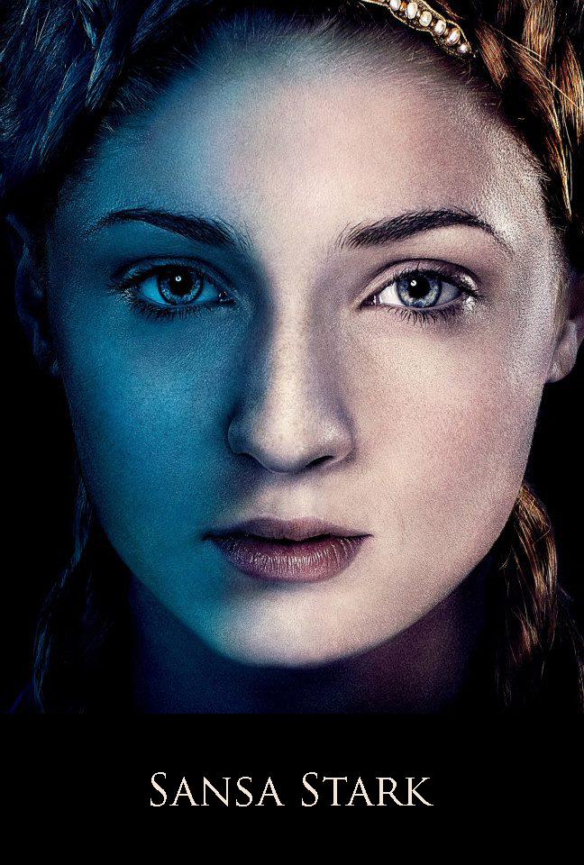

|

|
Sansa Stark
Sansa Stark is the elder daughter of Catelyn and Eddard Stark. She has three brothers (Robb, Bran and Rickon), a younger sister, Arya, and a half-brother, Jon Snow. Sansa Stark is one of the major POV Characters in the books. In the TV series, she is played by Sophie Turner.
Character and Appearance
Sansa is traditionally beautiful, taking after her mother's family (the Tullys) with her high cheekbones, vivid blue eyes and thick auburn hair. She is eleven years old at the start of the series. As she has grown up, her figure has been described as tall, graceful and womanly.[1]
Sansa was raised a lady, and possesses the traditional feminine graces of her milieu, with a keen interest in music, poetry, singing, dancing, embroidery, and other traditional feminine activities. Like many girls her age, Sansa is enthralled by songs and stories of romance and adventure, particularly those depicting handsome princes, honorable knights, chivalry, and love.[1] Initially those song and stories were Sansa's vision of the world beyond Winterfell, a world she desperately wishes to experience, but she was later disabused of such innocent romanticized notions.
Sansa's relationship with her sister Arya is often strained, and the two are opposites in most respects. She was briefly accompanied by a direwolf pup named Lady. She is fond of lemoncakes. See this collection of images.
History
Sansa is the eldest daughter and second child of Lady Catelyn and Lord Eddard Stark, head of House Stark and Warden of the North. She was born and raised at Winterfell. In her eleven years, she learns the duties of a noble daughter and is tutored by septa Mordane in the traditional womanly arts. Sansa has a younger sister Arya. She has an older brother, Robb, and two younger brothers, Bran and Rickon. She has a bastard half-brother, Jon Snow.
|